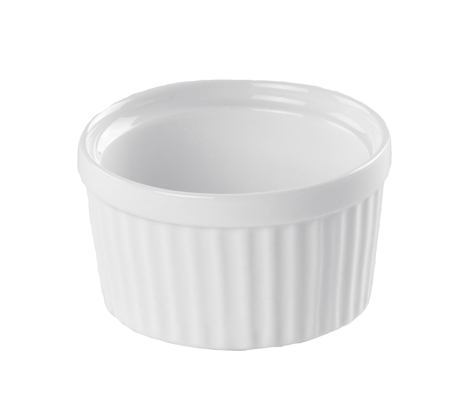

How to Make
Vanilla pudding

This recipe will give you instructions on how to whip up a simple Vanilla Pudding recipe from scratch.
Cooking utensils
Ingredients
Directions
Variations
Utensils required are
Any bowl works, Ramikens just look nice.
For this recipe you will need
If you use salted butter, you can reduce or entirely skip the salt at the beginning.
Video demonstration at bottom
Video Demonstration
Be aware of the timeskip at 2:22
~10 minutes to allow for stirring / thickening of mixture.